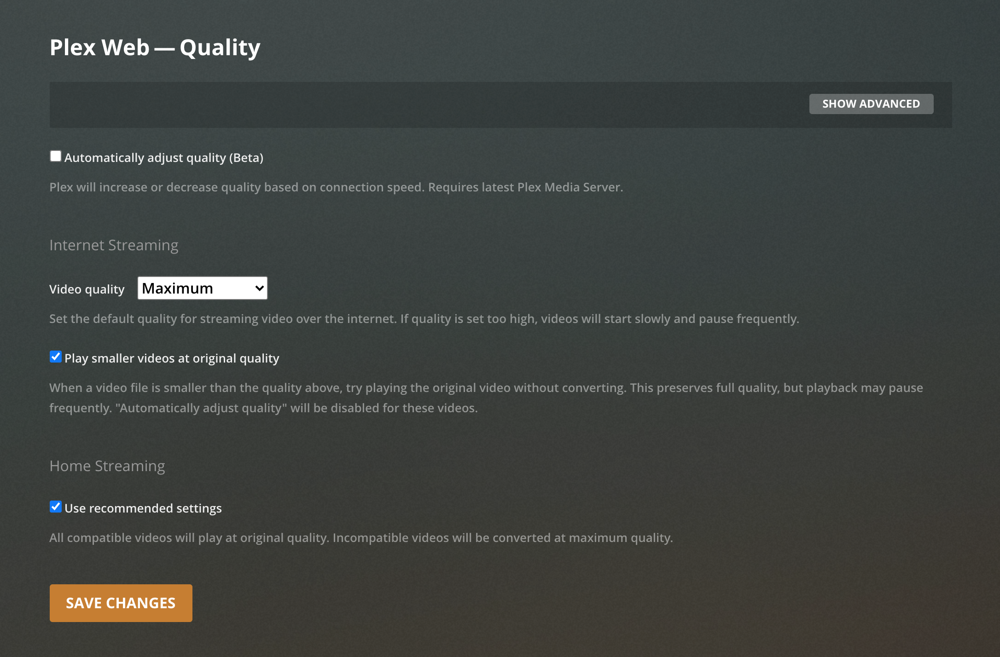

Congrats on receiving an invitation! Let's start by creating a Plex account. You can do this by following the link sent to your email or to a provided link. Select your preferred account type and create account.
Now that your account is made, let's configure your home screen. If you're not already on the "Customize Media" page, click on the home in the top left corner. Deselect everything except for "Movies" and "TV"; these contain my personal content. The other selections are ad-supported content provided by Plex which you can select if you're interested.
Next, we'll bump up your video quality to default to blu-ray quality. Head to the top right and click on settings.
Navigate to the "Quality" tab on the left.
Set the Video Quality option to Maximum. This will give you bluray quality video (higher than Netflix or Prime. If you find that your videos are buffering often, that might mean that your internet speed is not fast enough to play at the highest quality. If this is the case, you can either set the default Video Quality option lower on this page, or adjust settings while watching content. Optionally, you can select "Automatically adjust quality", but results may vary.
Lastly, you can either view from a browser on plex.tv or download the Plex app on iOS, Android, Roku, Fire TV, Apple TV, Android TV, or Shield.